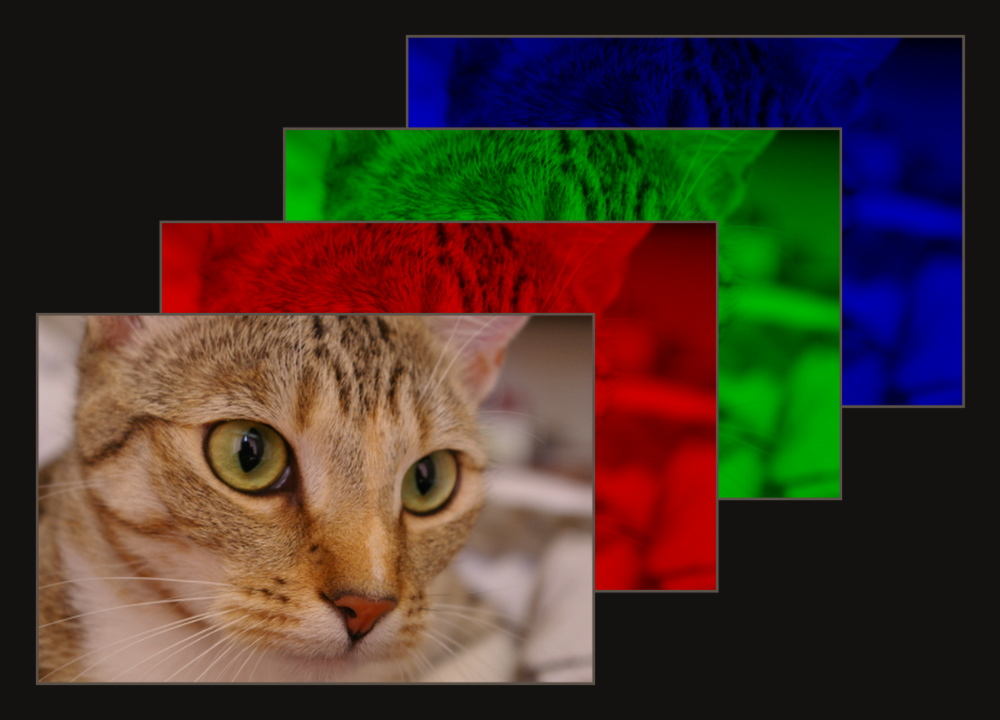
MADS-ML
Machine Learning
Tensors and
the cache
Reusing a model somebody else trained, what the numbers it hands you are, and how a small network learns on top of them.
Lesson 1
Hogeschool Utrecht

Agenda
six questions
Six questions for today
01
Where does deep learning fit?
02
Why use a model somebody else trained?
03
What is a tensor?
04
How can a network learn any function?
05
How does a network learn?
06
How do you search for a model?
Agenda

▲ question 01
Where does deep learning fit?
1 · The wounds
Copernicus, Darwin, Freud, and then Turing.
2 · How far can it grow?
A machine that helps build the next machine.
3 · Kinds of learning
Supervised, unsupervised, reinforcement, and the loop.
■ 1 — where does deep learning fit?
narcissistic wounds
Five narcissistic wounds
1
Copernicus
The earth is not the centre of the universe.
2
Darwin
Humans are a product of evolution.
3
Freud
We are driven by an unconscious.
4
Schrödinger
Our everyday logic falls short of quantum mechanics.
5
Turing
Humans are not the peak of intelligence.
1 / where does deep learning fit?
■ 1 — where does deep learning fit?
recursive self-improvement
Recursive self-improvement: a machine that helps build a better machine
Each version helps build the next one: a little better, and a little sooner.
I. J. Good called this an “intelligence explosion” (1965).
1 / where does deep learning fit?
■ 1 — where does deep learning fit?
growth that feeds itself
Growth that feeds itself: which curve is it?
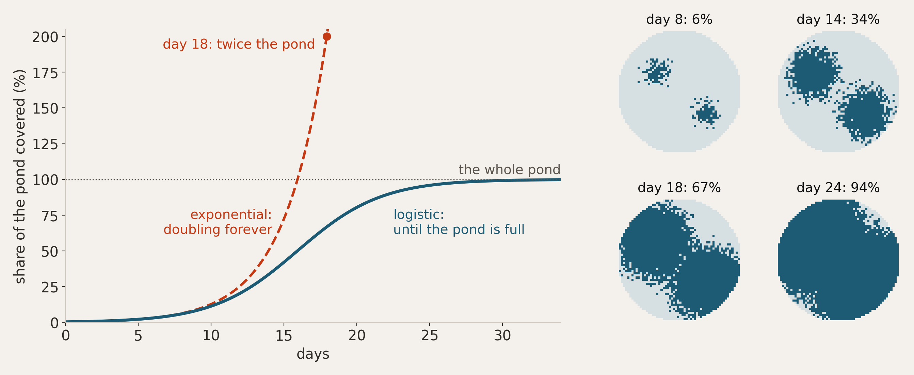
At the start the two curves are the same curve; the duckweed stops only when the pond is full. What is the pond for a machine that improves itself?
1 / where does deep learning fit?
■ 1 — where does deep learning fit?
what could bend the curve
When does red turn blue? Look for what limits it
Nobody knows whether intelligence has a limit. The limits we see in humans sit in their biology; for a machine they are different, and further away.
1 / where does deep learning fit?
■ 1 — where does deep learning fit?
three kinds of learning
Three kinds of learning
supervised · x and y
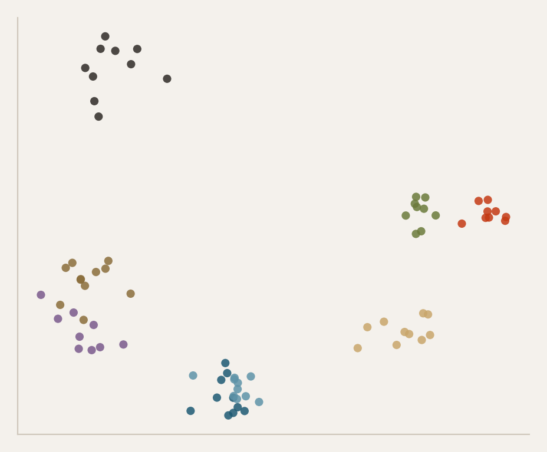
Every example comes with its answer: a class (classification) or a number (regression).
unsupervised · only x
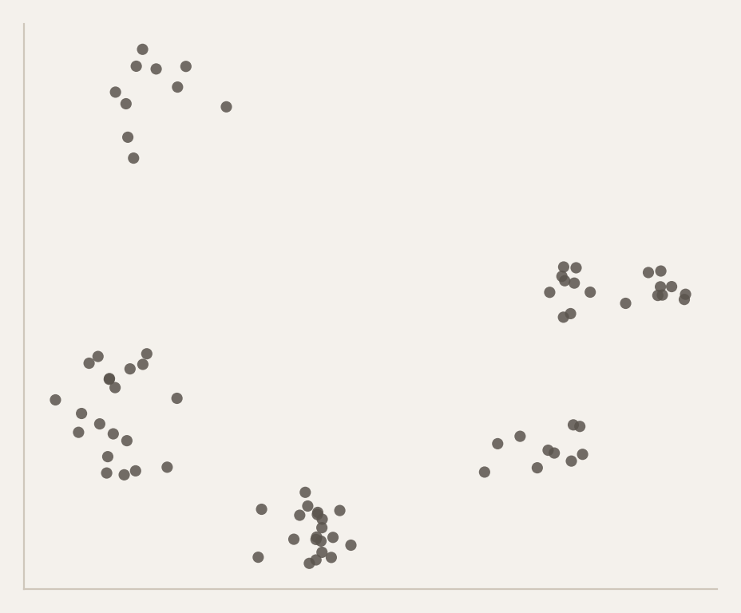
The same points without answers: find the structure in x itself.
reinforcement · a reward
No answers: the agent acts, and the environment returns a new state and a reward.
1 / where does deep learning fit?
■ 1 — where does deep learning fit?
loop engineering
An agent's loop has the parts of reinforcement learning
The check answers two questions: how good, and whether to stop. In a loop that runs without anyone watching, the stop condition is what matters most.
“Agents repeating cycles of work until a stop condition is met”: De Oliveira and Segner, Loop engineering: getting started with loops, Anthropic, 2026. claude.com/resources/articles/getting-started-with-loops
1 / where does deep learning fit?
● 01 — where does deep learning fit?
There are several ways in which machines can learn.
Supervised: x with y. Unsupervised: only x. Reinforcement: a reward after acting.
A loop is only as good as the check inside it.
▲ question 02
Why use a model somebody else trained?
1 · An ordered space
Similar photos get similar vectors.
2 · Embed once
Pay for the encoder once, train many heads.
3 · Which encoder?
Measure it on your task.
■ 2 — why use a model somebody else trained?
oxford flowers, 102 species
The encoder runs once; the head trains on what it stored
photos
5,000 photos of 102 kinds of flower
→
encoder · once
DINOv2-small, trained by Meta on 142 million photos, without labels. Frozen.
→
cache
384 numbers per photo, stored
→
head · yours
a small network, trained on a laptop, as often as you like
A frozen encoder gives the same vector for the same photo every time, so you compute it once and store it. Training only the head on top is transfer learning.
2 / why use a model somebody else trained?
■ 2 — why use a model somebody else trained?
eight of the 102 species
An ordered space, before anything is trained
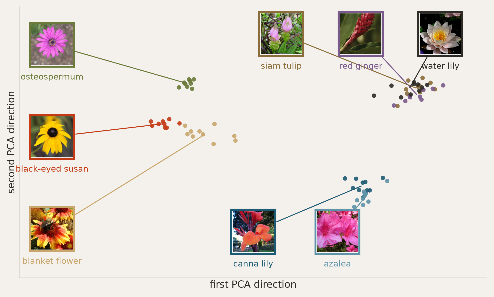
Nothing was trained on these labels, yet photos of one species sit together, and the three daisy-shaped flowers lie on one side.
2 / why use a model somebody else trained?
■ 2 — why use a model somebody else trained?
cosine similarity, from DAV
Similar means: pointing the same way
| pair | angle | cosine |
|---|---|---|
| A and B | 15° | 0.97 |
| A and C | 80° | 0.17 |
Cosine similarity looks at the angle, not the length: 1 is the same direction, 0 is a right angle. The nearest neighbour of A is the vector with the highest cosine: B.
DAV recap, vector spaces: cosine distance is 1 − cosine similarity.
2 / why use a model somebody else trained?
■ 2 — why use a model somebody else trained?
1,000 test photos × 4,000 training photos
Copy the label of the most similar photo: 99.1%
| flowers, 102 species | trains | accuracy |
|---|---|---|
| guess | nothing | 1.0% |
| nearest neighbour: the label of the training photo with the highest cosine | nothing | 99.1% |
| a small neural network trained on the vectors | a network | 99.3% |
No training at all, only angles in a space somebody else ordered. This is your baseline: anything you train has to beat it.
2 / why use a model somebody else trained?
■ 2 — why use a model somebody else trained?
flowers, satellites, textures
The encoder was never trained for your labels
| dataset · dinov2-small | two samples | classes | nearest neighbour | small network |
|---|---|---|---|---|
| Oxford Flowers | 102 | 99.1% | 99.3% | |
| EuroSAT, satellite tiles | 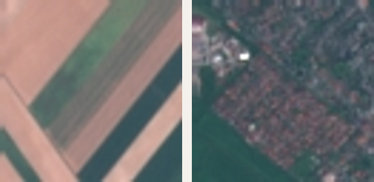 | 10 | 89.7% | 95.0% |
| DTD, textures | 47 | 77.0% | 80.3% |
DINOv2 learned to give two views of one photo similar vectors, and that order works for flowers, fields and fabrics. Textures leave the most room: that is where the search of question six runs.
2 / why use a model somebody else trained?
■ 2 — why use a model somebody else trained?
eurosat, 8,000 tiles, measured
Train 100 heads: 165 minutes or two
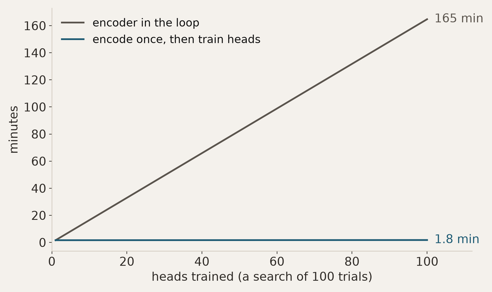
| measured | seconds |
|---|---|
| encode 8,000 tiles on a laptop | 99 |
| train one head on the stored vectors | 0.08 |
Encoder in the loop: every head encodes the same tiles again.
Encode once: 99 seconds, then 100 heads add 8 seconds.
2 / why use a model somebody else trained?
■ 2 — why use a model somebody else trained?
counting multiplications
A search repeats the head, never the encoder
E
encode once
+
(
N
experiments
×
H
one head
)
E · one photo through the encoder
≈ 5,700,000,000 multiplications
H · one photo through a head
384 × 10 = 3,840 multiplications
The encoder costs a million times the head, and a search multiplies only N × H.
2 / why use a model somebody else trained?
■ 2 — why use a model somebody else trained?
same rows, same head, three encoders
Which encoder? It moves the score by up to 14 points
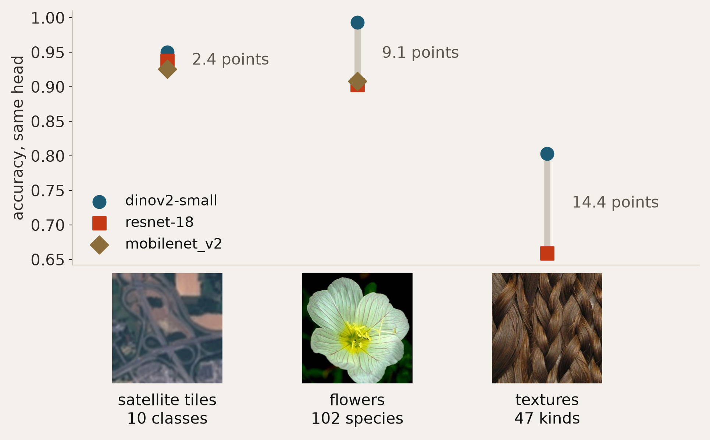
| encoder | trained on |
|---|---|
| dinov2-small | 142 M photos, no labels |
| resnet-18 | ImageNet, 1,000 objects |
| mobilenet_v2 | ImageNet, 1,000 objects |
Satellite tiles are close to what all three learned; textures are not. Pick the encoder by measuring it on your task, with the same head.
2 / why use a model somebody else trained?
● 02 — why use a model somebody else trained?
A pretrained encoder has already ordered your data.
Nearest neighbour on flowers: 99.1% with nothing trained. That is the baseline to beat.
Encode once, then train as many heads as you like: a search repeats only the cheap part.
The encoder matters most: measure which one fits your task.
▲ question 03
What is a tensor?
1 · Shape
How many axes, and how long each one is.
2 · Meaning
What each axis stands for: items, chunks, channels, time.
3 · Change the shape
Stack, aggregate, add an axis of length 1.
■ 3 — what is a tensor?
one sentence, all-MiniLM-L6-v2
A sentence becomes a vector: 384 numbers
“The cat sleeps on the warm windowsill.”
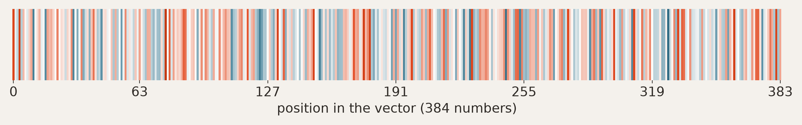
No single number means “cat”: the meaning is in the direction of the whole vector. A photo through DINOv2 gives the same kind of object, and from here on text and images take the same road.
3 / what is a tensor?
■ 3 — what is a tensor?
rank 1 to rank 5
A line, a plane, a cube, a box of cubes, a box that changes
The rank is the number of axes, the shape is how long each one is. One rank up is almost always “a stack of” the rank below.
3 / what is a tensor?
■ 3 — what is a tensor?
text as a tensor
Chunks of one document, or a batch of documents?
Another route, another meaning, the same shape: (B, D) is four sentences, or three documents after the mean. Here C counts chunks, not colour channels; torch sees only the shape.
3 / what is a tensor?
■ 3 — what is a tensor?
aggregate
From chunks back to one vector: take the mean
The mean over the chunk axis C turns (C, D) into (D), and a batch (B, C, D) into (B, D): one vector per document, which a head can work with.
3 / what is a tensor?
■ 3 — what is a tensor?
chelsea the cat, 300 × 451 pixels
A photo is three planes: (C, H, W)
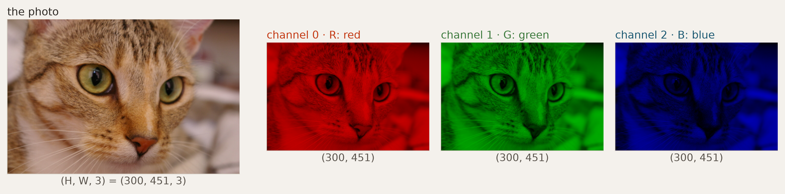
A photo file loads as (H, W, 3); torch wants the channels first, (3, H, W). Each channel is a grid of 300 × 451 numbers, light where the photo has much of that colour.
3 / what is a tensor?
■ 3 — what is a tensor?
six eurosat tiles
A batch of photos is 4D: (B, C, H, W)
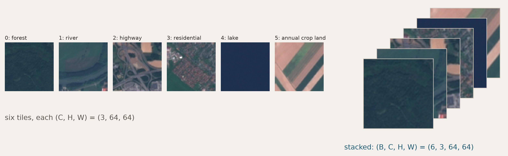
One tile is (3, 64, 64); six stacked are (6, 3, 64, 64). The encoder takes such a batch and returns (B, 384): that step is the cache, seen from the shapes.
3 / what is a tensor?
■ 3 — what is a tensor?
an axis of length 1
An axis of length 1 is free
![Top row: the cat in grey as a flat grid labelled (H, W); the same grey cat as a stack of one card, with a vermilion bracket of length 1 along the depth, labelled (1, H, W); the colour cat as a stack of three cards, red, green and blue, with a bracket of length 3. Bottom row: a grid of four chunk rows labelled (C, D); the same grid as one card with a vermilion bracket B = 1, labelled (1, C, D); four rows in four colours labelled (B, D); the same four rows as four separate cards of one row each, with a vermilion mark C = 1 and a bracket B = 4, labelled (B, 1, D)](img/lesson1/unit_axis.png)
A grey photo is (H, W), or one plane: (1, H, W), the same numbers with one more index that can only be 0. unsqueeze adds such an axis, squeeze takes it away.
3 / what is a tensor?
■ 3 — what is a tensor?
a layer that wants a shape
A layer for images wants (B, C, H, W): give a sound one more axis
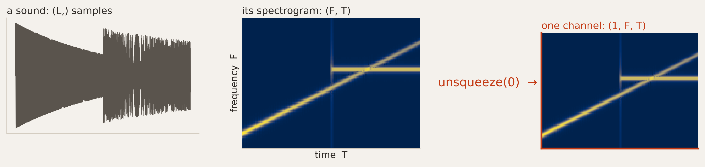
A layer for images always wants rank 4. A batch of sounds is rank 2 and a batch of spectrograms rank 3; one axis of length 1 makes it rank 4.
3 / what is a tensor?
● 03 — what is a tensor?
torch sees a shape. You have to know what it means.
Rank and shape: a line, a plane, a cube, a box of cubes, a box that changes.
Four chunks of one document and four documents have the same shape; a mean over C brings chunks back to one vector.
An axis of length 1 is free: it is how data gets the rank a layer wants.
▲ question 04
How can a network learn any function?
1 · A line
y = wx + b, and why stacking lines gives a line.
2 · A bend
A nonlinearity between the layers.
3 · Many bends
Enough of them draw any curve.
■ 4 — how can a network learn any function?
a linear function
A linear function: y = wx + b
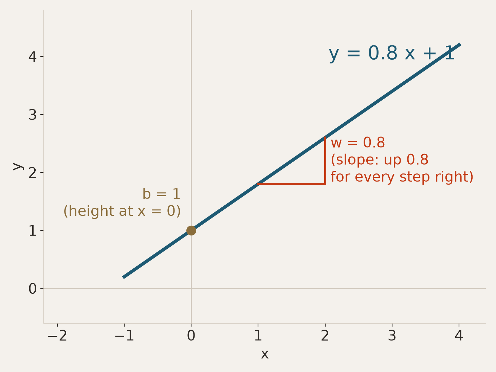
w, the weight, sets the slope; b, the bias, sets the height.
Training a linear function means finding w and b. Whatever they are, it draws a straight line.
torch: nn.Linear(1, 1)
4 / how can a network learn any function?
■ 4 — how can a network learn any function?
stacking lines
Two linear functions in a row are one line
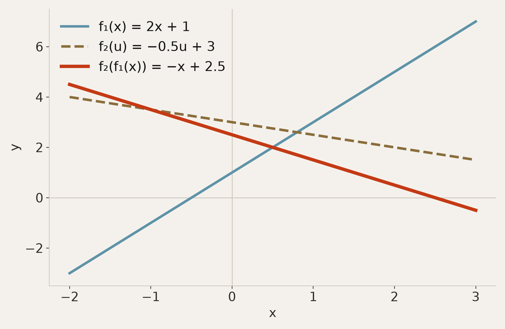
f₂(f₁(x)) = −0.5 · (2x + 1) + 3
= −1 x + 2.5
Put one line into another and you get a new w and a new b: still a line. A hundred linear layers draw what one draws.
4 / how can a network learn any function?
■ 4 — how can a network learn any function?
how a bend builds a curve
Clip each line at zero, add them up: a line with bends
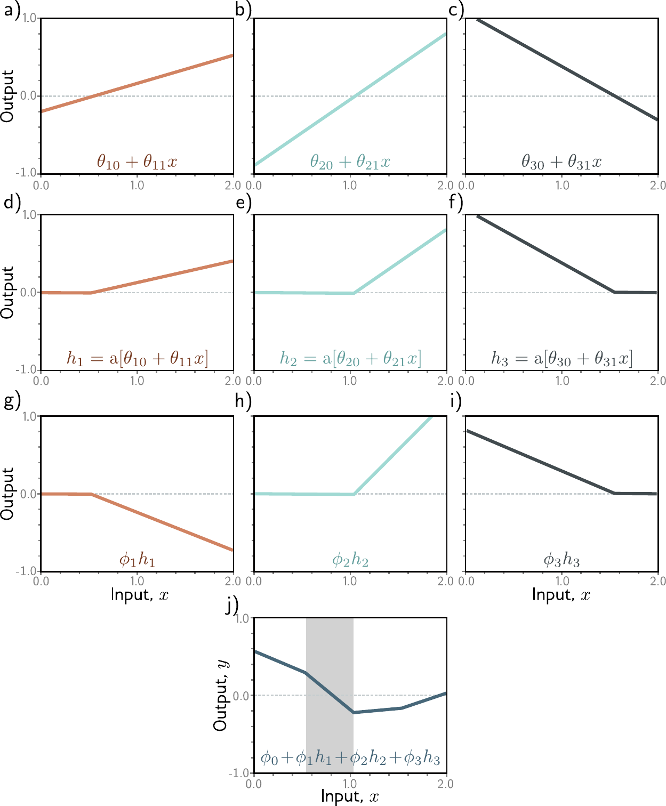
a–c three lines, w x + b. d–f ReLU, max(0, z), clips each at zero. g–i each times a weight. j the sum.
Every hidden unit adds one bend.
Figure 3.3 (p. 28) from Prince, Understanding Deep Learning, MIT Press, CC BY-NC-ND. udlbook.github.io/udlbook
4 / how can a network learn any function?
■ 4 — how can a network learn any function?
more units, more pieces
More units, more bends: enough bends draw any curve
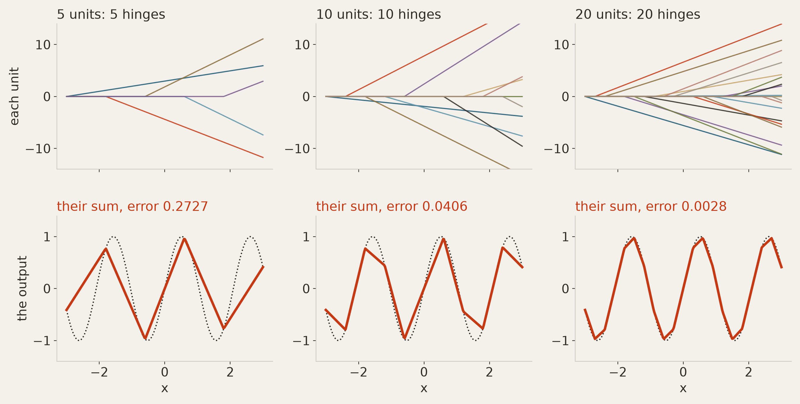
This is the universal approximation theorem: one hidden layer with enough units comes as close as you want to any continuous function. It does not say how many units you need, or whether training finds them.
4 / how can a network learn any function?
■ 4 — how can a network learn any function?
four activation functions
Which activation?
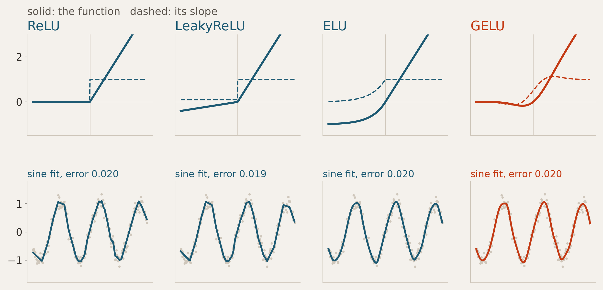
Each one bends the line, and with any of them the network draws the sine. The kinked ones draw straight pieces, the smooth ones curves.
4 / how can a network learn any function?
● 04 — how can a network learn any function?
Linear and nonlinear functions in turn make a universal function approximator.
A layer is wx + b followed by a nonlinearity.
Every unit adds a bend; enough bends approximate any continuous function.
▲ question 05
How does a network learn?
1 · The setup
Data, a model, a prediction.
2 · How wrong?
The loss, and a step downhill.
3 · The cycle
Repeat, and watch the curves.
■ 5 — how does a network learn?
supervised learning
Supervised learning: from a photo to its label
5 / how does a network learn?
■ 5 — how does a network learn?
the parts
The parts of deep learning, in words and in symbols
data
photos as vectors, each with its label
\(X = \{x_1, \dots, x_n\},\; y = \{y_1, \dots, y_n\}\)
parameters
the numbers training changes
\(W,\ b\)
a layer
a line, then a bend
\(l(x) = Wx + b,\quad \mathrm{ReLU}(x) = \max(0, x)\)
predict
layers in a row
\(\hat y = l_n \circ \mathrm{ReLU} \circ \cdots \circ \mathrm{ReLU} \circ l_1(x)\)
loss
how wrong, in one number
\(\mathcal{L}(y, \hat y)\)
optimize
a small step that makes the loss lower
\(w \leftarrow w - \eta\, \dfrac{\partial \mathcal{L}}{\partial w}\)
5 / how does a network learn?
■ 5 — how does a network learn?
a valley with two weights
The optimizer decides how to step downhill
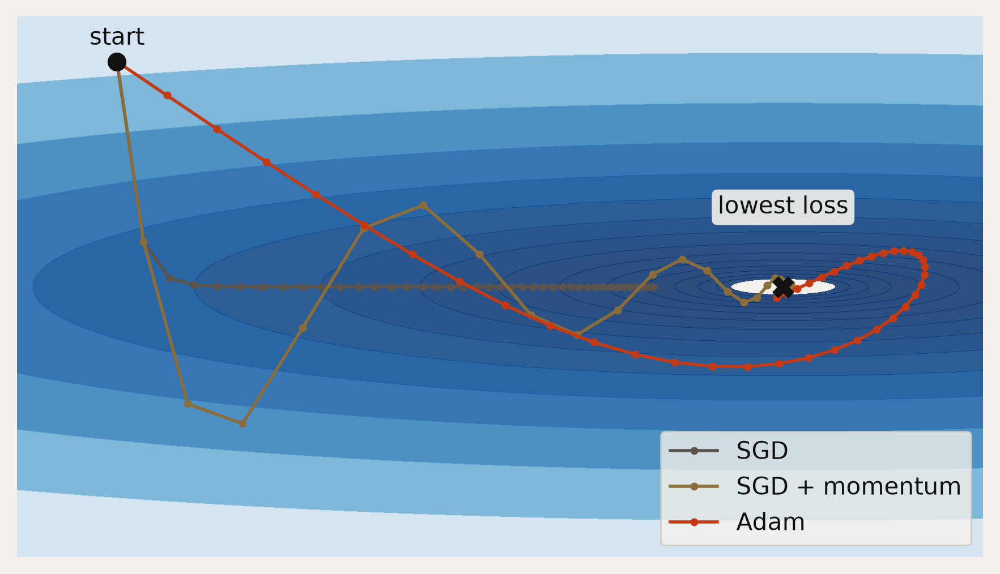
\(w \leftarrow w - \eta\, \dfrac{\partial \mathcal{L}}{\partial w}\)
The loss is a signal: at every step it gives each weight a small tug at the wheel, downhill. The learning rate \(\eta\) says how hard.
SGD takes that step as it is; Adam scales it for every weight, a good default.
5 / how does a network learn?
■ 5 — how does a network learn?
loss and metric
A loss to learn from, a metric to report
The loss steers the learning: it has to be smooth, so the optimizer can follow its slope.
The metric is for you: a number you can read, such as accuracy, or MAPE, the mean error in percent.
Sometimes one measure plays both roles, such as MSE.
5 / how does a network learn?
■ 5 — how does a network learn?
the training cycle
The cycle: predict, measure, step, repeat
One pass over all training data is an epoch; training repeats the cycle for many epochs.
5 / how does a network learn?
■ 5 — how does a network learn?
learning curves, dtd
Watch two curves: train and valid
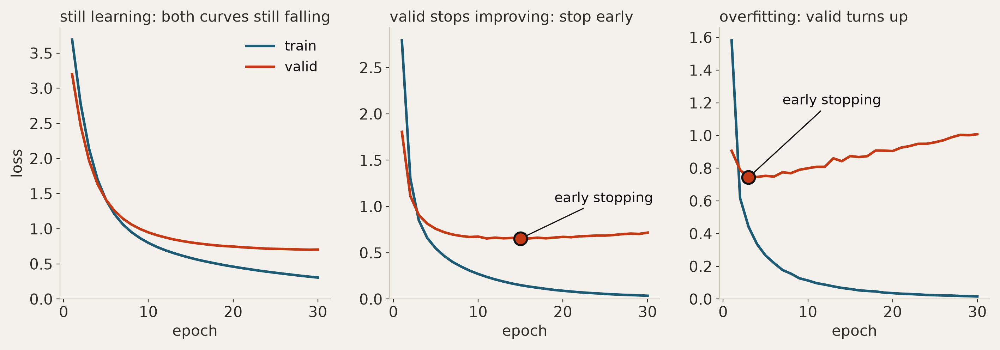
The model learns from the train split; the valid split it never trains on. When train keeps falling and valid turns up, the model is memorising the training data: overfitting. Keep the weights from where valid was lowest: early stopping.
5 / how does a network learn?
● 05 — how does a network learn?
Predict, measure how wrong, step downhill. Repeat.
The loss is one number for how wrong; the gradient says which way is downhill; the optimizer takes the step.
Train on the loss, report a metric you can explain.
Read the train and valid curves: still learning, finished, or overfitting.
▲ question 06
How do you search for a model?
1 · Choices
Every model is a set of choices.
2 · A search space
The choices you are willing to try.
3 · Read the curves
A fixed budget decides what looks best.
■ 6 — how do you search for a model?
a model is a set of choices
Building a model means making choices
Every question with more than one answer is an axis you can search along.
6 / how do you search for a model?
■ 6 — how do you search for a model?
noise on the input
Why add noise? So the model cannot learn the exact points
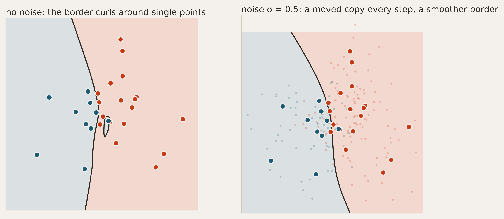
With noise of standard deviation σ every training step sees a slightly moved copy of each vector, so the model learns the region around a point instead of the point itself. It works against overfitting.
6 / how do you search for a model?
■ 6 — how do you search for a model?
what each option changes
0, 1 or 2 hidden layers: three models, with their shapes
0 hidden
(B, 384)→noise→Linear 384 → 47→(B, 47)1 hidden
(B, 384)→noise→Linear 384 → 512→GELU→Linear 512 → 47→(B, 47)2 hidden
(B, 384)→noise→Linear 384 → 512→GELU→Linear 512 → 512→GELU→Linear 512 → 47→(B, 47)B photos in a batch
384 numbers per photo from dinov2-small
512 units, your choice of width
47 classes in the dataset to predict
6 / how do you search for a model?
■ 6 — how do you search for a model?
notebook 04, 24 trials
A search space; every trial picks one of each
encoder
hidden layers
units per layer
noise
learning rate
One trial, in vermilion, trains one model. The search tries 24 such picks and compares them with the baseline.
6 / how do you search for a model?
■ 6 — how do you search for a model?
dtd, a wider search: 0 to 8 layers, 15 epochs
Look at the curves of the trials, not only the score
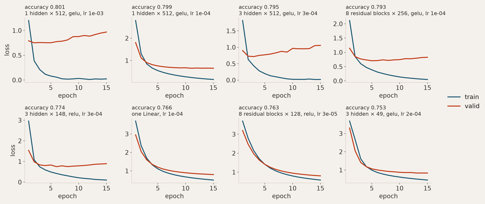
Some trials overfit after a few epochs; others had barely started when the 15 epochs ran out.
6 / how do you search for a model?
■ 6 — how do you search for a model?
the same heads, 100 epochs
Train longer and the ranking changes
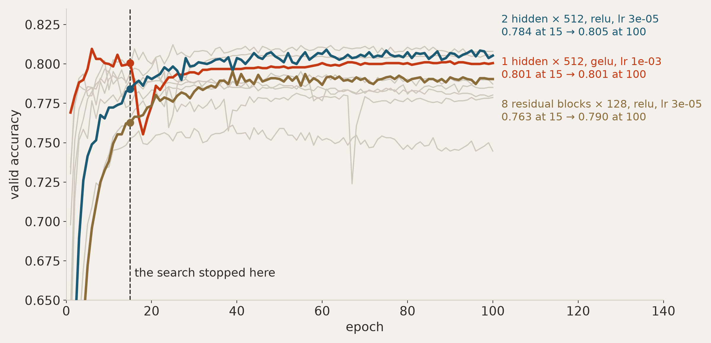
At epoch 15 the petrol head is 1.7 points behind the red one; at epoch 100 it is ahead.
A small learning rate or a deep stack is slow, not bad. More epochs cost time: one axis read at a fixed budget cannot say which is better.
6 / how do you search for a model?
● 06 — how do you search for a model?
A search tries the choices you put in its space, at the budget you give it.
Every question about the model is an axis: encoder, depth, width, activation, noise, learning rate.
Look at the learning curves: a trial that overfits and a trial that had not finished are different results.
A fixed number of epochs ranks speed as well as quality; repeat the winner before you call it a win.
Where does deep learning fit?
Machines learn from answers, from structure, or from a reward in a loop.
Why use a model somebody else trained?
Its space is ordered; encode once, train many heads, measure the encoder.
What is a tensor?
A shape torch can see, and a meaning only you know.
How can a network learn any function?
Lines with a bend between them; enough bends draw any curve.
How does a network learn?
Predict, measure the loss, step downhill; watch train and valid.
How do you search for a model?
Turn every choice into an axis, and read the curves, not only the score.
Lesson 1 · Tensors and the cache